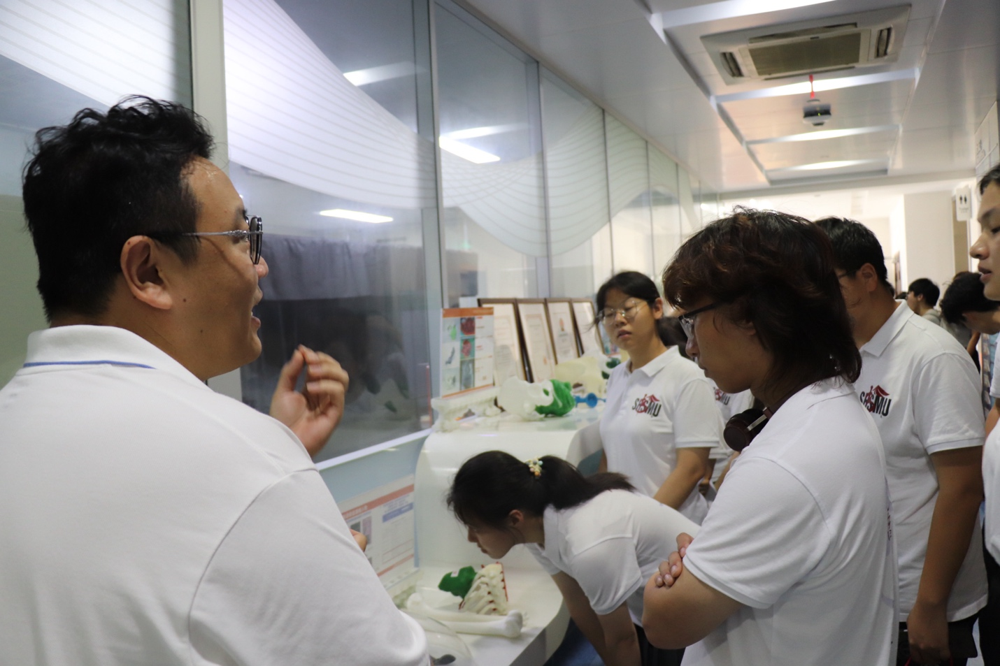

在上海九院3D打印中心，医工交叉的临床应用在这里得到了直观的呈现。
邓亮博士站在展示区前，为同学们讲述3D打印技术在临床中逐步探索和发展的历程。陈列柜里摆放的一个个骨骼模型和定制假体，见证着这项技术从实验室走向手术室的真实脚步。
同学们围在展台旁认真倾听、仔细观察。通过邓博士的讲解，大家了解到了数字建模与材料科学如何帮助外科医生解决复杂的临床难题，也对科技成果如何真正服务于患者有了更清晰的认识。
 山海有回声博医计划 · 实践纪实互动影像库浏览影像
山海有回声博医计划 · 实践纪实互动影像库浏览影像 实践现场 003 / 018
上海 · 上海九院

在上海九院3D打印中心，医工交叉的临床应用在这里得到了直观的呈现。
邓亮博士站在展示区前，为同学们讲述3D打印技术在临床中逐步探索和发展的历程。陈列柜里摆放的一个个骨骼模型和定制假体，见证着这项技术从实验室走向手术室的真实脚步。
同学们围在展台旁认真倾听、仔细观察。通过邓博士的讲解，大家了解到了数字建模与材料科学如何帮助外科医生解决复杂的临床难题，也对科技成果如何真正服务于患者有了更清晰的认识。